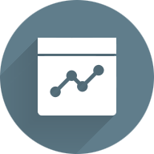

<!DOCTYPE html>
<html ng-app="ionicApp">
  <head>
    <meta charset="utf-8">
    <meta name="viewport" content="initial-scale=1, maximum-scale=1, user-scalable=no, width=device-width">
    <title></title>

    <link href="lib/ionic/css/ionic.css" rel="stylesheet">
    <link href="css/style.css" rel="stylesheet">

    <!-- IF using Sass (run gulp sass first), then uncomment below and remove the CSS includes above
    <link href="css/ionic.app.css" rel="stylesheet">
    -->

    <!-- ionic/angularjs js -->
    <script src="lib/ionic/js/ionic.bundle.js"></script>

    <!-- cordova script (this will be a 404 during development) -->
    <script src="cordova.js"></script>

    <!-- your app's js -->
    <script src="js/app.js"></script>
    <script src="js/controllers.js"></script>
    <script src="js/todoapp.js"></script>
    <script src="js/todocontrollers.js"></script>
  </head>

  <body ng-app="starter">
    

    <ion-nav-bar class="bar-positive">
      <ion-nav-back-button class="button-icon ion-arrow-left-c">
      </ion-nav-back-button>
    </ion-nav-bar>
             
    <ion-nav-view></ion-nav-view>

    <script id="templates/mymenu.html" type="text/ng-template">
      <ion-view view-title="mymenu">
        <ion-view view-title="Dashboard">
  <ion-content>
  
    <!--  <ion-item ng-repeat="playlist in playlists" href="#/app/playlists/{{playlist.id}}">
        {{playlist.title}}
      </ion-item>
  -->


  <div class="list">

    <a class="item item-avatar" href="#">
      
      <h2>Faculty Name</h2>
      <p>Designation , Experience</p>
    </a>
  </div>
<button class="button button-positive button-outline" ng-click="myownpopup()">
   View Attendance
</button>

<center>
    <table border="2" >


<tr>
  <td><a href="Notifications.html"></a></td>
  <td></td>
  <td><a href="Attendance.html"></a></td>
 

</tr>

<tr>
  <td>Notifications</td>
  <td>Academics</td>
  <td>Attendance</td>
</tr>

<!--THIRD ROW -->

<tr>
  <td><a href="todo.html"></a></td>
  <td></td>
  <td></td>
 

</tr>

<tr>
  <td>To Do</td>
  <td>Results</td>
  <td>Online</td>
</tr>


<!--THIRD ROW -->

<tr>
  <td><a href="Files.html"></a></td>
  <td><a href="#/app/info"> </a></td>
  <td></td>
 

</tr>

<tr>
  <td>My Files</td>
  <td>Info</td>
  <td>About</td>
</tr>


    </table>

    </center> 


  </ion-content>
</ion-view>
    </script>

    <script id="templates/messages.html" type="text/ng-template">
      <ion-view view-title="Messages">
        <ion-content padding="true">
           <a class="item item-icon-left item-icon-right" href="#">
    <i class="icon ion-chatbubble-working"></i>
No Messages
    <i class="icon ion-ios-telephone-outline"></i>
  </a>

        </ion-content>
      </ion-view>
    </script>


    <script id="templates/notification.html" type="text/ng-template">
      <ion-view view-title="notifications">
        <ion-content padding="true">
           <a class="item item-icon-left item-icon-right" href="#">
    <i class="icon ion-chatbubble-working"></i>
No new notifications
    <i class="icon ion-ios-telephone-outline"></i>
  </a>

        </ion-content>
      </ion-view>
    </script>


    
    <script id="templates/tabs.html" type="text/ng-template">
      <ion-view>
        <ion-tabs class="tabs-icon-top tabs-positive">

          <ion-tab title="Home" icon="ion-home" href="#/tab/home">
            <ion-nav-view name="home-tab"></ion-nav-view>
          </ion-tab>

          <ion-tab title="About" icon="ion-ios-information" href="#/tab/about">
            <ion-nav-view name="about-tab"></ion-nav-view>
          </ion-tab>

          <ion-tab title="Sign-Out" icon="ion-log-out" href="#/sign-in">
          </ion-tab>

        </ion-tabs>
      </ion-view>
    </script>

    <script id="templates/home.html" type="text/ng-template">
      <ion-view view-title="Home">
        <ion-content padding="true">
          <p>Example of Ionic tabs. Navigate to each tab, and
          navigate to child views of each tab and notice how
          each tab has its own navigation history.</p>
          <p>
            <a class="button icon icon-right ion-chevron-right" href="#/tab/facts">Scientific Facts</a>
          </p>
        </ion-content>
      </ion-view>
    </script>

    <script id="templates/facts.html" type="text/ng-template">
      <ion-view view-title="Facts">
        <ion-content padding="true">
          <p>Banging your head against a wall uses 150 calories an hour.</p>
          <p>Dogs have four toes on their hind feet, and five on their front feet.</p>
          <p>The ant can lift 50 times its own weight, can pull 30 times its own weight and always falls over on its right side when intoxicated.</p>
          <p>A cockroach will live nine days without it's head, before it starves to death.</p>
          <p>Polar bears are left handed.</p>
          <p>
            <a class="button icon ion-home" href="#/tab/home"> Home</a>
            <a class="button icon icon-right ion-chevron-right" href="#/tab/facts2">More Facts</a>
          </p>
        </ion-content>
      </ion-view>
    </script> 

    <script id="templates/facts2.html" type="text/ng-template">
      <ion-view view-title="Also Factual">
        <ion-content padding="true">
          <p>111,111,111 x 111,111,111 = 12,345,678,987,654,321</p>
          <p>1 in every 4 Americans has appeared on T.V.</p>
          <p>11% of the world is left-handed.</p>
          <p>1 in 8 Americans has worked at a McDonalds restaurant.</p>
          <p>$283,200 is the absolute highest amount of money you can win on Jeopardy.</p>
          <p>101 Dalmatians, Peter Pan, Lady and the Tramp, and Mulan are the only Disney cartoons where both parents are present and don't die throughout the movie.</p>
          <p>
            <a class="button icon ion-home" href="#/tab/home"> Home</a>
            <a class="button icon ion-chevron-left" href="#/tab/facts"> Scientific Facts</a>
          </p>
        </ion-content>
      </ion-view>
    </script>

    <script id="templates/about.html" type="text/ng-template">
      <ion-view view-title="About">
        <ion-content padding="true">
          <h3>Create hybrid mobile apps with the web technologies you love.</h3>
          <p>Free and open source, Ionic offers a library of mobile-optimized HTML, CSS and JS components for building highly interactive apps.</p>
          <p>Built with Sass and optimized for AngularJS.</p>
          <p>
            <a class="button icon icon-right ion-chevron-right" href="#/tab/navstack">Tabs Nav Stack</a>
          </p>
        </ion-content>
      </ion-view>
    </script>

    <script id="templates/nav-stack.html" type="text/ng-template">
      <ion-view view-title="Tab Nav Stack">
        <ion-content padding="true">
          <p></p>
        </ion-content>
      </ion-view>
    </script>


  </body>
</html>
